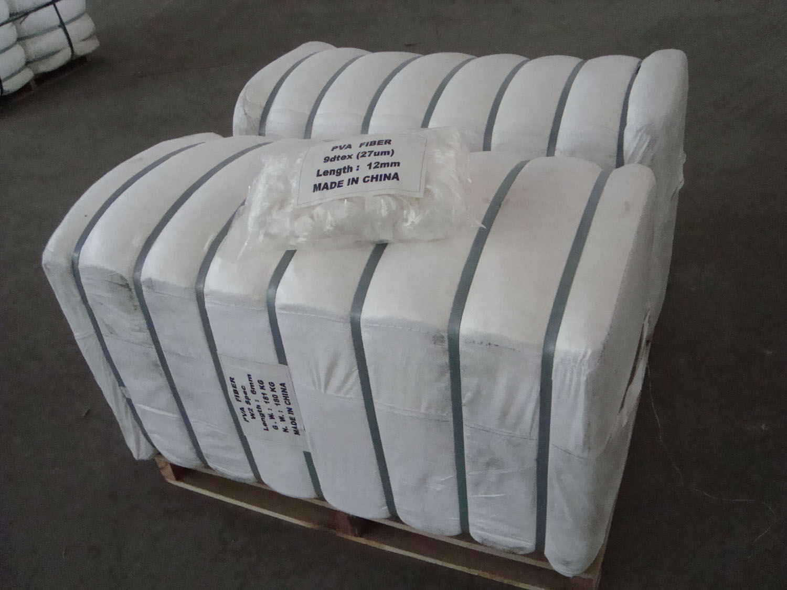

D. PVA PRODUCTS
1.PVA FIBER
Water-soluble polyvinyl alcohol water-soluble staple fiber is also called Water-soluble PVA short fibers.It ismade by polyvinyl alcohol as raw material,then through wet spinning, heat treatment, room temperature water, the fiber crimp oil obtained. It has good physical and mechanical properties, can be dissolved in water in a certain temperature, have a dry good thermal stability.
Feature1)Hand feeling is soft
2)Bulky effect
3)Warter absorbency
4)Light weight
5)Better spinning
Specification
| Titer (dtex) | Cut Length (mm) |
| 1.22 | 38 |
| 1.33 | 38 |
| 1.56 | 38 |
Application:
pva yarns
pva sewing thread